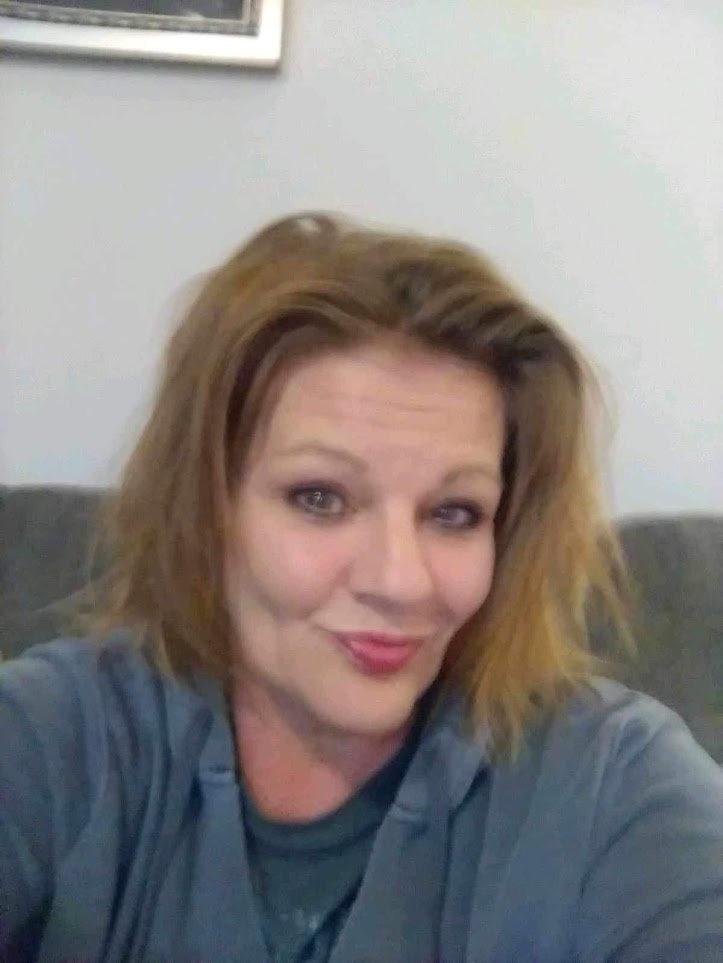

Timeline photos
This is Chrissy. She is 128 days sober today.
The last I saw Chrissy I'm pretty sure she stole my electric cigarette roller.
You can't really even imagine the life some of these people have experienced.
If I've heard once about a woman being chained naked to a radiator to be sold for sex I've heard it a dozen times.
I know a woman who relapsed and burned all her clothes off her body.
It's an unimaginable life.
These are some of the most intense, hardcore people I've ever met.
I don't know all of Chrissy's story. But I guarantee... she has stories.
Why do they do it? Why do they stay in that life?
Like all human issues, it's complicated.
First of all, The Street is real. It's intense. It's exhilarating. It's extreme love and extreme hate.
These are not people that are going to be able to find happiness sitting on their couch binge watching Netflix like the rest of us. They often think WE are the pathetic ones. Slaves to 9 to 5 jobs, mortgages and just mindlessly doing what we're told.
These are wild humans. These are wolves among domesticated dogs.
So just quitting this life is not without a great deal of sacrifice.
That said, addiction becomes its own cage, it's own master/slave relationship. Eventually you find yourself in a place where you can't get out even if you wanted to.
I never have understood why some people can't even slightly grasp addiction. They judge us addicts like we're lazy losers. In reality, we're in a violent war for our lives.
How do you get in a violent bar fight and hauled off to jail one Friday night and end up getting smashed at the exact same bar the next Friday? Addiction is a wild horse you are strapped to and you can't figure out how to get off.
But not Chrissy. Chrissy got off.
128 is AMAZING! That's over 4 months. You are sometimes not just taking one day at a time, you are taking one hour at a time and one minute at a time. It's SO hard. Addiction is the most powerful sorcerer you will ever meet. It will do everything in its power to pull you back. I'm 20 years sober and I see a bottle of Jack like I see a lost love. My soul mate will always be booze. And I know it will always destroy me. So we can't be together. Ever. Like ever ever.
Good job, Chrissy. I'm so proud of you. You are AMAZING.
And don't sweat the cigarette roller. Just owning up to is payment enough.